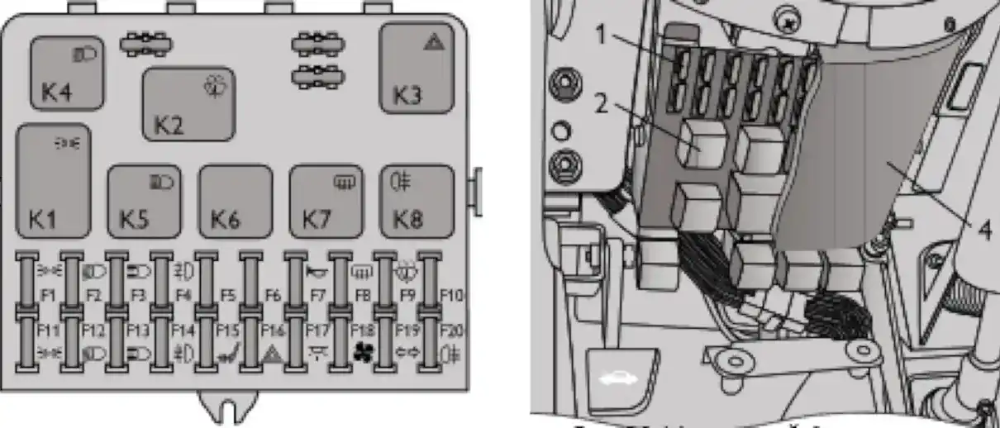

ТЕХНИЧЕСКОЕ ОБСЛУЖИВАНИЕ И ТЕКУЩИЙ РЕМОНТ АВТОМОБИЛЯ
Замена плавких предохранителей
предохранителимонтажный блокF1F20реле
Монтажный блок с предохранителями и реле крепится на специальных кронштейнах слева от рулевой колонки и закрывается снизу крышкой. Для доступа к монтажному блоку снимите его крышку, для чего отверните саморезы.

Неисправный предохранитель определяется по вышедшим из строя цепям, защищаемым этим предохранителем, в соответствии с таблицей. Сила тока, на которую рассчитан предохранитель, указана на его лицевой части, а номер предохранителя нанесён на корпусе монтажного блока. Новый предохранитель должен иметь ту же маркировку по току, что и заменяемый.
| № | Номинал | Защищаемые цепи |
|---|---|---|
| F1 | 5 A | Лампы подсветки, плафон освещения багажника, подкапотная лампа, лампы освещения номерного знака, лампы передних габаритных огней. |
| F2 | 7,5 A | Лампа ближнего света (левая фара), электрокорректор света фар. |
| F3 | 10 A | Лампа дальнего света (левая фара). |
| F4 | 10 A | Левая противотуманная фара. |
| F5 | 30 A | Реле электростеклоподъёмников. |
| F6 | 15 A | Блок управления электроблокировкой дверей. |
| F7 | 20 A | Прикуриватель, реле звукового сигнала, звуковой сигнал. |
| F8 | 20 A | Реле обогрева заднего стекла (контакты), элемент обогрева заднего стекла. |
| F9 | 20 A | Лампа освещения вещевого ящика, переключатель очистителя ветрового стекла, реле фароочистителей, электродвигатель фароомывателя. |
| F10 | — | Резерв. |
| F11 | 5 A | Лампы задних габаритных огней, регулятор освещения приборов. |
| F12 | 7,5 A | Лампа ближнего света (правая фара), моторедуктор корректора (правая фара). |
| F13 | 10 A | Лампа дальнего света (правая фара). |
| F14 | 10 A | Правая противотуманная фара. |
| F15 | 20 A | Моторедукторы управления наружными зеркалами. |
| F16 | 10 A | Реле прерыватель указателей поворота и аварийной сигнализации (в режиме аварийной сигнализации). |
| F17 | 7,5 A | Плафон индивидуальной подсветки, контрольная лампа иммобилизатора, лампы СТОП-СИГНАЛА, дополнительный сигнал торможения, плафон освещения салона. |
| F18 | 25 A | Лампы света заднего хода, электровентилятор отопителя, реле обогрева заднего стекла, электродвигатель омывателя ветрового стекла, электродвигатель очистителя заднего стекла, электродвигатель омывателя заднего стекла, блок управления блокировкой дверей. |
| F19 | 10 A | Реле прерыватель указателей поворота и аварийной сигнализации (в режиме указателей поворота), переключатель указателей поворота, комбинация приборов, контрольная лампа включения блокировки дифференциала. |
| F20 | — | Задние противотуманные фонари. |
Предупреждение / внимание:
Категорически запрещается установка самодельной перемычки или предохранителя другого номинала взамен перегоревшего. В случае повторного выхода из строя предохранителя для выяснения и устранения причин, вызвавших его оплавление, Вам необходимо обратиться к дилеру ЗАО «Джи Эм-АВТОВАЗ».
Категорически запрещается установка самодельной перемычки или предохранителя другого номинала взамен перегоревшего. В случае повторного выхода из строя предохранителя для выяснения и устранения причин, вызвавших его оплавление, Вам необходимо обратиться к дилеру ЗАО «Джи Эм-АВТОВАЗ».
Примечание:
Дополнительно под панелью приборов располагаются блоки реле с предохранителями, которые защищают элементы систем впрыска. Предохранители имеют номинал по току 15 А. Дополнительный предохранитель на 30 А защищает цепи электровентиляторов системы охлаждения. Плавкими предохранителями не защищаются электрические цепи зажигания, пуска двигателя, генератора, реле ближнего света фар, реле дальнего света фар.
Дополнительно под панелью приборов располагаются блоки реле с предохранителями, которые защищают элементы систем впрыска. Предохранители имеют номинал по току 15 А. Дополнительный предохранитель на 30 А защищает цепи электровентиляторов системы охлаждения. Плавкими предохранителями не защищаются электрические цепи зажигания, пуска двигателя, генератора, реле ближнего света фар, реле дальнего света фар.